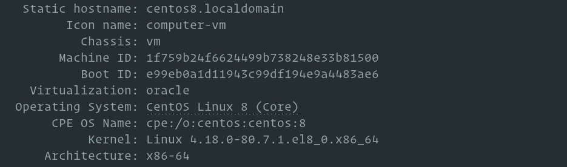
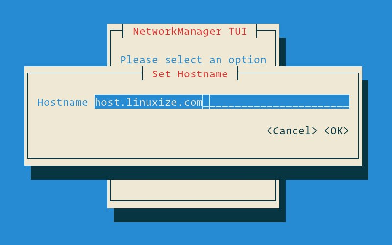
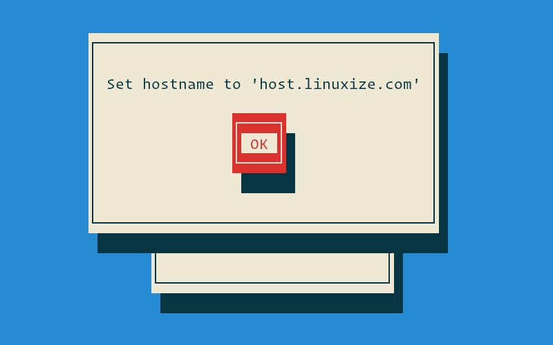

如何在 CentOS 8 上更改主机名
通常，主机名是在操作系统安装期间设置的，或者在创建虚拟机时动态分配给虚拟机的。但是有多种原因可能导致您需要更改主机名。最常见的是在创建实例后自动设置主机名的情况。
本指南解释了如何在 CentOS 8 上设置或更改主机名而无需重新启动系统。
先决条件
在继续本教程之前，请确保您以具有 sudo 特权的用户身份登录。
了解主机名
主机名是用于标识网络上设备的标签。在同一网络上，您不应有两台或更多具有相同主机名的计算机。
有三类 hostname ： static ， pretty ，和 transient 。
static- 传统主机名。它存储在/etc/hostname文件中，可以由用户设置。pretty- 用于向用户展示的自由格式 UTF8 主机名。例如，Your desktop。transient- 由内核维护的动态主机名。 DHCP 或 mDNS 服务器可以在运行时更改临时主机名。默认情况下，它与static主机名相同。
显示当前主机名
要查看当前主机名，请执行以下命令：
hostnamectl

在此示例中，当前主机名设置为 centos8.localdomain 。
更改主机名
方法1：使用 hostnamectl 命令
在 CentOS 8 和所有其他使用 systemd 的 Linux 发行版中，您可以使用以下 hostnamectl 命令更改系统主机名和相关设置。语法如下：
sudo hostnamectl set-hostname host.example.com
sudo hostnamectl set-hostname "Your Pretty HostName" --pretty
sudo hostnamectl set-hostname host.example.com --static
sudo hostnamectl set-hostname host.example.com --transient
例如，要将系统静态主机名更改为 host.buzheng.org ，可以使用以下命令：
sudo hostnamectl set-hostname host.buzheng.org
要将 pretty 主机名设置为 Your desktop ，请输入：
sudo hostnamectl set-hostname "Your desktop" --pretty
该 hostnamectl 命令不产生输出。成功时，返回 0，否则返回非零失败代码。
要验证主机名是否已成功更改，请使用 hostnamectl 命令。
方法2：使用 nmtui 命令
nmtui 基于 curses, 是用于与 NetworkManager 进行交互的工具。它也可以用来设置或更改主机名。
通过在终端中键入其名称来启动该工具：
sudo nmtui
使用方向键浏览选项，选择 Set system hostname 并按 Enter ：

输入新的主机名：
按下 Enter 以确认新的主机名：

最后，重新启动 systemd-hostnamed 服务以使更改生效：
sudo systemctl restart systemd-hostnamed
方法3：使用 nmcli 命令
nmcli 是用于控制 NetworkManager 的命令行工具，也可用于更改系统的主机名。
要查看当前主机名，请输入：
sudo nmcli g hostname
要更改主机名为 host.buzheng.org，使用以下命令：
sudo nmcli g hostname host.buzheng.org
为了使更改生效，请重新启动 systemd-hostnamed 服务：
sudo systemctl restart systemd-hostnamed
结论
要在 CentOS 系统上设置或更改主机名，请使用 hostnamectl set-hostname 命令，后跟新的主机名。